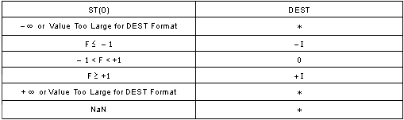

|
|
指令 |
说明 |
|
|
FISTTP m16int |
将 ST 当作有符号整数（截断）存储到 m16int，并弹出 ST。 |
|
|
FISTTP m32int |
将 ST 当作有符号整数（截断）存储到 m32int，并弹出 ST。 |
|
|
FISTTP m64int |
将 ST 当作有符号整数（截断）存储到 m64int，并弹出 ST。 |
FISTTP 以截断（截尾）为取整模式，将 ST 中的值转换成有符号整数，结果传输到目标，并弹出 ST。FISTTP 接受字、短整数及长整数目标操作数。
下表显示按整数格式存储各类数值时得到的结果。

F 表示有限浮点值。
I 表示整数。
* 表示浮点操作无效 (#IA) 异常。
DEST ¨ ST;
pop ST;
C1 清除；C0、C2 及 C3 未定义。
无效、堆栈无效（堆栈下溢）、精度。
#GP(0) - 如果目标操作数位于不可写的段。
CS、DS、ES、FS 或 GS 段中的内存操作数有效地址非法。
#SS(0) - SS 段中的地址非法。
#PF(错误代码) - 页错误。
#AC - 如果在当前特权级别为 3 时进行未对齐的内存引用。
#NM - 如果 CR0.EM = 1。
如果 CR0 中的 TS 设置为 1。
#UD - 如果 CPUID.PNI(ECX bit 0) = 0。
中断 13 - 如果操作数的任何部分出现在从 0 到 0FFFFH 的有效地址空间之外。
#NM - 如果 CR0.EM = 1。
如果 CR0 中的 TS 设置为 1。
#UD - 如果 CPUID.PNI(ECX bit 0) = 0。
中断 13 - 如果操作数的任何部分出现在从 0 到 0FFFFH 的有效地址空间之外。
#NM - 如果 CR0.EM = 1。
如果 CR0 中的 TS 设置为 1。
#UD - 如果 CPUID.PNI(ECX bit 0) = 0。
#PF(错误代码) - 页错误。
#AC - 当前特权级别为 3 时的未对齐的内存引用。